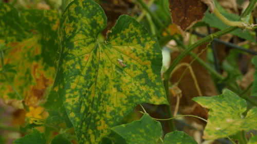

Angular yellow patches bounded by veins
The yellow patches stop at the veins and look angular. A leaf that yellows evenly, with no vein-limited edge, belongs with the widespread-yellowing guide page.

What to look for
Inspect the underside for fuzzy growth and see whether veins bound the discolored areas.
Trace one side of the yellow patch to the nearest vein. Turn the leaf over at that point: discoloration on both surfaces and a crease visible on only one surface are different clues.
Possible causes and next steps
Some foliar diseases produce angular spots. Keep foliage dry and document both sides and the host.
How to tell similar problems apart
Veins may outline an angular patch, but its outline alone cannot identify the cause. Look for a matching mark underneath.
Hold a leaf against a bright background. If several small blocks end sharply at the same veins, compare their undersides for translucent areas. A single pale rectangle where the blade was folded deserves a check for a crease before treating it as a spreading spot.
What to do now
Inspect an early patch in daylight and photograph it from both sides. Space crowded foliage and water at soil level.
Inspect across a fold as well as along it. Where damage continues onto the neighboring panel of tissue, note whether it keeps the same angular outline. If you request identification, include the plant name and both views of an early lesion while there is still green tissue around it.
What to check next
If multiple leaves develop sharply bounded patches after wet weather, save a fresh sample before the tissue dries or falls away.
Where does each patch stop?
Hold a cucumber or squash leaf against the light. If several yellow islands stop at the same small veins, turn those exact islands over early in the morning. Downy growth on their undersides is a useful clue; a single angular mark left by a crease is much weaker evidence.